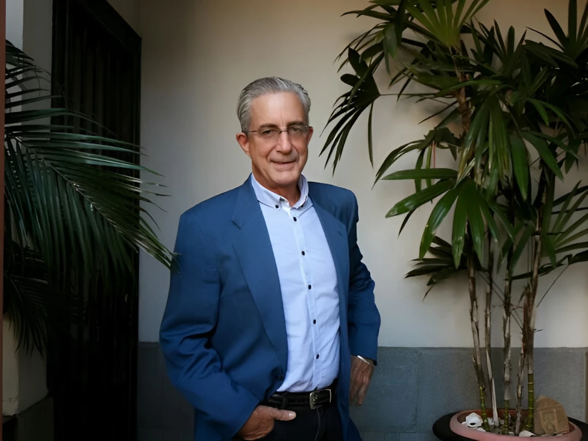

Co-Fundador · Ex Presidente
Steven Lill Coit
Ciudadano estadounidense viviendo en Costa Rica desde hace más de 30 años. Creador de la Fundación Corcovado y propietario de Casa Corcovado Jungle Lodge.